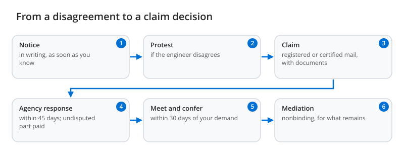

Claims and disputes on public contracts
In one sentence: most disputes are settled as change orders; when they aren't, the contract's notice and protest steps and the Public Contract Code 9204 claim process decide whether you get paid, so follow them exactly.

Before a claim: notice and protest
Almost every public contract requires prompt written notice when you believe something is extra work or a delay, and a written protest if the engineer disagrees. Caltrans' Standard Specifications set a detailed process and deadlines for this; local agencies have their own. Missing a notice deadline can waive the claim, however good it is. See Change orders and potholing findings.
Public Contract Code 9204
For California public works, PCC 9204 sets a claim process for a contractor's claim for time, payment or a disputed amount:
- Submit the claim in writing by registered or certified mail, with reasonable documentation.
- The agency reviews it and, within 45 days, provides a written statement of the disputed and undisputed portions. The period can be extended by mutual agreement.
- The agency pays any undisputed portion within 60 days of its statement.
- If you disagree, you may demand an informal meet and confer; the agency schedules it within 30 days.
- What remains disputed goes to nonbinding mediation, unless both sides agree otherwise.
- Unpaid claim amounts accrue interest as the statute sets.
A sub without a contract with the agency can ask the prime to present its claim; the prime must answer within 45 days whether it did.
Documenting a claim
- Daily reports describing the issue as it happened. See Daily reports and documentation.
- Photos with dates and locations.
- Labor, equipment and material records for the disputed work, kept separately.
- Correspondence and RFIs.
- A schedule analysis for delay: what was critical and why.
PM notes
Start a separate cost code the day something looks like extra work, even if you expect a quick change order.
Common mistakes / what agencies actually check
- Waiting until the end of the job to give notice.
- Mixing disputed and normal work in one cost code.
- A claim without a schedule analysis when time is part of it.